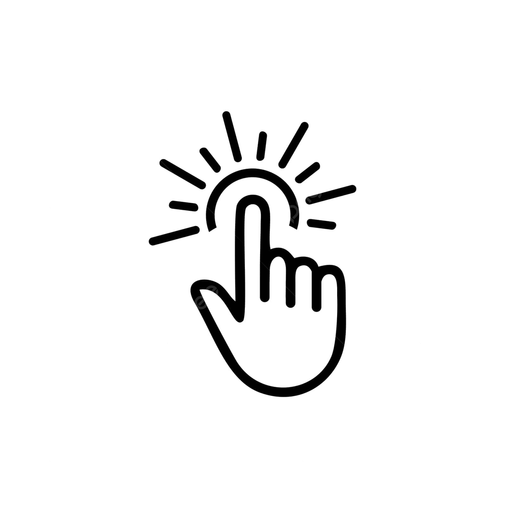

Fitur Utama
Real-Time Monitoring
Data cuaca terkini dapat diakses langsung melalui aplikasi web atau mobile.

Koneksi Wi-Fi
Menggunakan ESP32 dengan koneksi Wi-Fi untuk pengiriman data secara real-time.

Antarmuka Interaktif
Data ditampilkan melalui LCD grafis ST7920 dan antarmuka aplikasi yang user-friendly.
Pemantauan Multi-Parameter
Mencakup suhu, kelembapan, tekanan udara, intensitas cahaya, gas, dan status hujan.
Informasi Alat
Hasil menunjukkan sistem berfungsi dengan akurasi tinggi dalam membaca data cuaca.